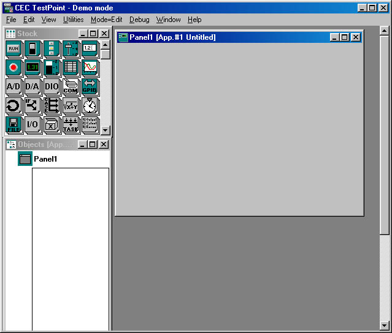
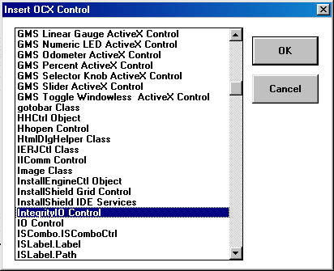

This example was created using the Demo version of Testpoint version 4.0. The writer of this document assumes that the reader has a basic working knowledge of the Testpoint. It is also assumed that the ADC-xxx module is connection to the computers COM1 serial port and that the ADC-xxx module communication speed is set to 115200 Baud (SW1 1 & 2 set to the on position).
Step 1 - Create a new blank project.

Setp 2 - Add the Integrity IO ActiveX module to Panel 1
Drag an OCX 32 object to Panel 1

Press the Load OCX button on the settings screen, select the IntegrityIO Control modle and press OK.
... and set the objects name to IIComm
Step 3 - Add a Start button to Panel 1.

Drag a button to Panel 1 and set the Name property to Start.

Right click the IIComm object and select settings. Drag the lnComPort, lnBaudRate, and bPortOpen properties to the actions tab for the Start object. Set the lnComPort property to 1, the lnBaudRate property to 115200 and the bPortOpen property to 1.Drag the IIComm object icon from Panel 1 to the Start object action list and select SetDIOBitDDR. Set the bitValue parameter to 0 and the bitPosition parameter to 8. This will set Port 1 Bit 0 to be an output. Drag the IIComm object icon from Panel 1 to the Start object action list and select SetDIOBitDDR. Set the bitValue parameter to 1 and the bitPosition parameter to 0. This will set Port 2 bit 0 to be an input. Right click the IIComm object and select settings. Drag the lnDigitalPort property to the Start object action list and set it to 0. This will set all set the Digital I/O Port 1 pins to 0.
Step 4 - Add a stop button.

Set the Pushbutton1 object Name to Stop.

Click on the Actions tab.Right click on the IIComm object and select settings. Drag the bPortOpen property from IIComm settings to the Stop button action list. Set the property to 0.
Step 5 - Add Digital Port I/O Control and Display.

Drag a switch to Panel 1 and set the name property to Port1Bit0.

Now drag an indicator to Panel 1. Set the Name to Port2Bit0, set the Initial Value to 0, Label 0 to Off, and Label 1 to On.
Step 6 - Connect the switch to Port 1 Bit 0 and the Indicator to Port 2 Bit 0
Right click the Port1Bit0 object and select Action List. Drag the IIComm object into this action list and select SetDIOBit. Drag the Port1Bit0 object into the bitValue field, and set the bitPosition to 8. Next, drag the IIComm object into the Action List and selelect GetDIOBit. Set this bitPosition to 0. Drag the IIComm object to the Actions list and select Get last result. Drag the Port2Bit0 object to the Actions list and drag the IIComm object into its to field.
Step 7 - Add the Analog I/O Control and Input Display.

Drag a Knob obeject and an LED Display object to Panel 1. Change the Knob object name to DAC0, set its ScaleMaxValue to 5, and its TicStopValue to 5. Change the LED Display object name to ADC0, set its FixedDecimal property to True, and its Decimals propery to 3.
Step 8 - Connect the Knob to D/A Output 0 and the LED Display to Analog input 0.

Right click on the DAC0 object and select Action list. Right click the IIComm object and select Settings. Drag the lnDACControl object to the DAC0 object list and set the value to 0. Right click the IIComm object and select Settings. Drag the dDACOutput to the DAC0 object list. Drag the DAC0 object to its parameter field. Right click the IIComm object and select Settings. Drag the lnADCControl setting to the DAC0 action list. Set it to 8. Drag the ADC0 object to the DAC0 action list and select Set. Right click the IIComm object and select Settings. Drag the dADCUnipolar setting to the ADC0 input.